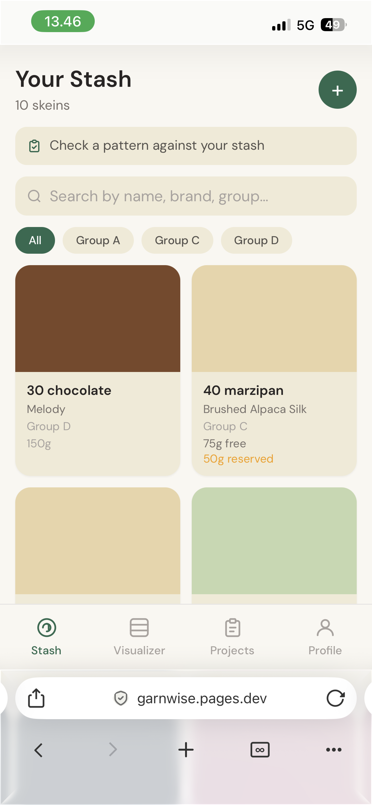
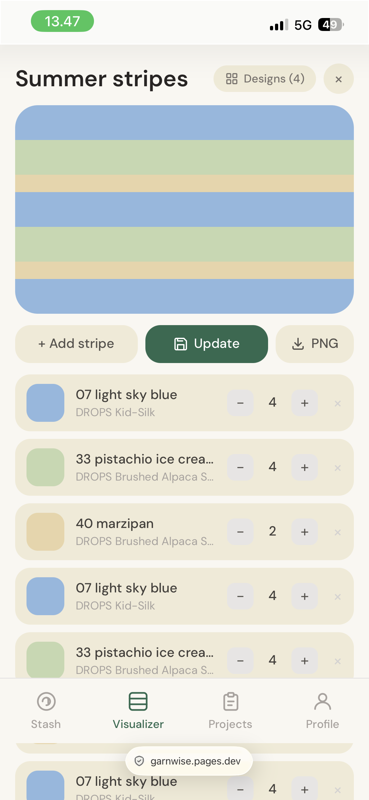
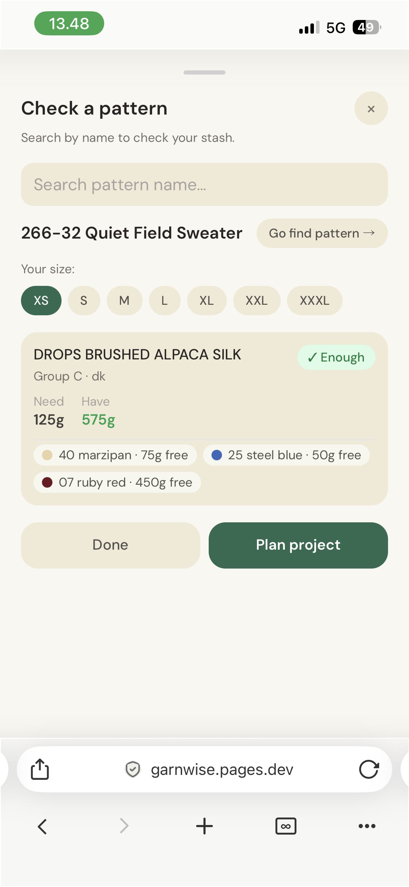

Side project · 2026
A mobile-first yarn stash tracker and pattern planner — built to help knitters use what they already have.



Overview
Knitters accumulate yarn — then buy more because they can't tell if what they have is enough. Garnwise closes that loop: log your stash, check a pattern against it, allocate specific colorways, and track the project to completion.
I came to this as a new knitter. I noticed the pattern in the knitters around me — growing stashes, buying extra just in case. A few projects in, I had my own stash to track.
Built for knitters who want to knit from what they have, rather than defaulting to buying new. The measure of success is simple: the stash gets smaller over time.
Add to stash
The stash wasn't the original focus — but it became the foundation everything else builds on. It's there when you're standing in a yarn shop or browsing second-hand: does this go with what I already have? Am I missing something specific for a project I'm planning? Log dye lots and you can even check exact batches later.
Pattern check → project
Finding a pattern worth making takes time. The last thing you want is to get there and have to guess whether your stash covers it. Pattern check connects the two directly: search by name, pick your size, and see whether you have enough — in a single color or by combining what you have. If you're short, you see exactly how much more you need to buy.
Projects
Project notes end up on scraps of paper or scattered across phone apps — easy to lose, and useless if you forget them at home. Projects keeps yarn allocation, pattern reference, needle size, and notes together, accessible whenever and wherever you're knitting.
Visualizer
This was the starting point for the whole project. Learning to knit, I picked a DROPS pattern and worked with the small stash I had — mixing colors into stripes. There was no way to see how it would look before knitting it. I wasn't fully happy with the result, and the hours were already spent. Garnwise started as the tool I wished I'd had: a canvas to try combinations and adjust ratios before committing any yarn or time.
Gauge reuse
Swatching is tedious and uses up yarn — and if the tension is off, you do it again before you can even start. It matters for getting the garment right, but it's easy to dread. Log your gauge when you get it right, and next time you reach for the same yarn, those numbers are surfaced so you're not starting from scratch.
Design decisions
Built by using it
I used myself as the primary test user throughout — adding features as I learned more about knitting or hit a real need while using the tool. That's also why DROPS is the foundation and not Ravelry, the dominant knitting platform: I'd never heard of Ravelry. I built for my own use case.
Web app over native
No app store gate, no review cycle, no platform lock-in. A mobile-first web app ships to iOS and Android from a single codebase — a push to main is live in seconds via Cloudflare Pages.
Stash as the reservation source of truth
When you allocate yarn to a project, those grams are reserved stash-wide immediately. Pattern check, the allocate screen, and the stash overview all show free grams, not total. The tool is only useful if the numbers are always honest.
Offline-first, sync as opt-in
Local storage is the write path. Supabase sync only activates when the user creates an account — no sign-up gate on first use.
No third-party CDN assets
All fonts and assets are self-hosted. No Google Fonts, no jsDelivr — every external request leaks the user's IP and needs GDPR justification.
Supabase in the EU (Ireland region)
Chosen at project setup, not a default. Data stays in the EU without needing to explain Standard Contractual Clauses.
Hardcoded yarn data instead of scraping
DROPS yarn and colorway data is stored in the app. Scraping would be fragile and legally murky. Hardcoded data is boring and auditable.
DROPS A–F yarn group system
DROPS patterns specify yarn by group, not by product name. Modelling this means pattern check works across the whole range — which is how knitters actually substitute yarn.
Reduced auth surface
Google sign-in was built and then removed from the UI. Email/password only for now — fewer integrations to maintain, and less to explain to users on a privacy-first product.
Account deletion that actually deletes data
Removes the Supabase auth record and all associated rows. Not soft-deleted, not archived — gone.
What's next
The current version solves the immediate problem — knowing what you have and planning from it. The layer I'm most excited about building next is personalization: once the tool has gauge data from completed projects, it can start making genuinely useful recommendations.
Which needle size is likely to give you the right tension based on how you've knit before. How much yarn you'll actually need — adjusted for your personal tension, not just the pattern estimate. Color combinations based on color theory and your own color profile. The tool stops being just a tracker and starts knowing you as a knitter.